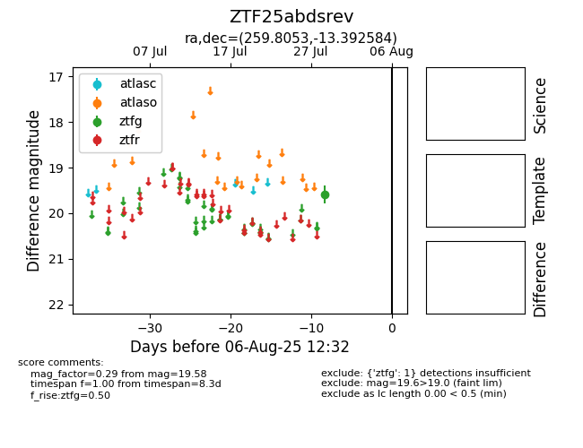

Target ZTF25abdsrev at 2025-08-06 17:07, see:
FINK: fink-portal.org/ZTF25abdsrev
Lasair: lasair-ztf.lsst.ac.uk/objects/ZTF25abdsrev
ALeRCE: alerce.online/object/ZTF25abdsrev
alt names
ZTF25abdsrev (ztf,fink)
coordinates:
equatorial (ra, dec) = (259.8053,-13.39258)
galactic (l, b) = (9.9375,+13.49895)
photometry
last ztfg=19.58
1 ztfg detections
